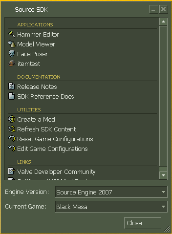

Valve has a history of updating the SDK and breaking far more things than they fix. In this particular case, they updated the SDK (WHY?! They said they were gonna phase it out, not break it!) and it’s broken. It can’t be used until a fix is found or Valve fixes it.
I hope there will be a fix very soon so that you and your team can work on the Hazard Course mod and so that .RK can work on his Vent Mod for the “We’ve Got Hostiles!” chapter.
Hammer is now working fine for mymod and source 2006.
It’s fun putting maps together. I’m still very much an amateur but I like seeing the map come together.
Usually while using hammer I either listen to music or watch TV.
Hammer and Black Mesa won’t work.
Error!
SteamStartup() failed: SteamStartup(0xf,0x0018e580) failed with error 1: failed to take master pipe connection lock
Is anyone else getting this? Anyone know what to do?
What part of “Valve broke Hammer” don’t you understand?
I just restart Steam with that one, usually fixes it.
Usually.
What is difference beetween Sdk and Sdk base?
SDK is the mapping tool
SDK Base is used for mods.
To be a bit more specific, the SDK is the package that includes the tools for developers (Faceposer, Hammer, HLMV) and the SDK Base is the plain Source Engine build and a crapton of assets (mostly from HL2) that mods and games would rely on so that they don’t need to be installed multiple times separately. I think Steampipe breaks that last part, though.
I followed everything and did everything, but this keeps happening. I tried to include as much as I could in the picture.
Hey this is my gameinfo.txt and works fine!:gameinfo.txt CLICK TO DOWNLOAD
"Configs"
{
"Games"
{
"Black Mesa"
{
"GameDir" "c:\Program Files (x86)\steam\steamapps\sourcemods\BMS"
"hammer"
{
"GameData0" "c:\Program Files (x86)\steam\steamapps\sourcemods\BMS\bms.fgd"
"TextureFormat" "5"
"MapFormat" "4"
"DefaultTextureScale" "0.250000"
"DefaultLightmapScale" "16"
"GameExe" "c:\Program Files (x86)\Steam\SteamApps\common\Source SDK Base 2007"
"DefaultSolidEntity" "func_detail"
"DefaultPointEntity" "info_player_start"
"BSP" "c:\Program Files (x86)\Steam\SteamApps\common\SourceSDK\bin\source2007\bin\vbsp.exe"
"Vis" "C:\Program Files (x86)\Steam\SteamApps\common\SourceSDK\bin\source2007\bin\vvis.exe"
"Light" "c:\Program Files (x86)\Steam\SteamApps\common\SourceSDK\bin\source2007\bin\vrad.exe"
"GameExeDir" "c:\Program Files (x86)\Steam\SteamApps\common\Source SDK Base 2007"
"MapDir" "C:\Program Files (x86)\Steam\SteamApps\SourceMods\BMS\maps"
"BSPDir" "C:\Program Files (x86)\Steam\SteamApps\SourceMods\BMS\maps\maps"
"CordonTexture" "tools\toolsskybox"
"MaterialExcludeCount" "0"
}
}
"SDKVersion" "3"
}
"SDKVersion" "3"
}
I updated the original guide (by Hezus) and run fine:
Follow this steps:!
1. Make sure Black Mesa, Source SDK Base 2007 and Source SDK are all properly installed. Run Source SDK at least once for it to create all the folder structures. Also run Black Mesa at least once, so you know SDK Base 2007 is properly installed.
2. Go to your Steam folder (mostly in C:\Program Files(x86)\Steam). Then go to \Steam\SteamApps\common\SourceSDK\bin\source2007\bin\
3. In this folder, find the GameConfig file. Edit it and copy paste my code, save and exit. If you have never used SDK before, this file does not exist!
No problem you can download it at the top of the post(download and put in the directory:\Steam\SteamApps\common\SourceSDK\bin\source2007\bin).
4. Now open steam an go to “Library/Tools” and search “Source SDK” and open it.
You need to chose Source SDK 2007 whit Black Mesa like this:

And press close.
5. Go to Steam installed games and play Black Mesa!
[COLOR=‘Red’]NOTE: Pay attention to the “Program Files (x86)” folder. If you are running a 32-bit version of Windows, the Program Files folder is called “Program Files”.
[COLOR=‘red’]NOTE 2: If you don’t have steam installed on “C:\Program files\Steam”(in 32bits) or “C:\Program files (x86)\Steam” (in 64bits) you must edit the code of gameinfo.txt and put your installation directory.
[COLOR=‘Red’]NOTE 3: You can dowload all tools in “Library/Tools” on Steam.
Black Mesa Torrent:Click
Enjoy! 
Hello there I’m not one to normally post here but a link on the Steam Source SDK forums sent me here and I feel like there needs to be some cleanup of information.
First off don’t use the Source SDK Launcher Valves wrecked that thing and it isn’t coming back. No don’t mess around with gameinfo.txt in the mods folder or any of that.
The answer is Source SDK 2013. Maps compiled in Source SDK 2013 are backwards compatible with mods made in 2006, 2007 and 2009.
Now then you could spend awhile going through the process of setting up hammer for it or you can use this tool I made. Tool is still beta but I update it regularly and is the one I of course recommend.
Pics for Blackmesa setup in the tool


Can confirm that the above works. Even better, it works with VBCT too (other than the running the map thing at the end), which means even after the SDK update which pretty much trashed VBCT’s ability to figure out the SDK directory system, we can still use it.
Double post, but after playing around a bit, it seems like the above method has a few oddities. Why are some of the entity keyvalues missing (eg. from npc_enemyfinder)? Why does the HL2 content mostly take precedence over the BM reskins (for example, on some valve and fence props) while in Hammer?
I’m not particularly familiar with the mod content mounting/hammer FGD system. Is there any way to fix these so that they’re more or less normal again?
Put Black Mesa’s entry in the Source SDK 2013 Multiplayer\hl2\gameinfo.txt before HL2’s (which I believe is by default on line 44).
** Executing…
** Command: “c:\program files\steam\steamapps\youraccountname\sourcesdk\bin\source2007\bin\vrad.exe”
** Parameters: -game “C:\Program Files (x86)\Steam\steamapps\sourcemods\BMSMIA” “C:\Program Files (x86)\Steam\SteamApps\sourcemods\BMSMIA\maps\Arrival1”
- Could not execute the command:
“c:\program files\steam\steamapps\youraccountname\sourcesdk\bin\source2007\bin\vrad.exe” -game “C:\Program Files (x86)\Steam\steamapps\sourcemods\BMSMIA” “C:\Program Files (x86)\Steam\SteamApps\sourcemods\BMSMIA\maps\Arrival1” - Windows gave the error message:
“Access is denied.”
Any Ideas?
It also said it cannot find the file specified.
Hm. Is the maps directory read-only? That might prevent the compiler from working there.
^
|
EDIT: I’ve written a small setup tool to automate this process for setting up the 2013 SDK for Black Mesa (you can download the tool from the link in my post on the next page). If it doesn’t work, the original manual setup instructions are below.
Okay so after fiddling around with the Source file directory system, I came up with my own way of manually setting up the Source 2013 compile tools for Black Mesa. I’ve given these instructions to everyone on the Hazard Course team, including some of the testers for their own personal use, and they have it running without any major issues.
That said, here’s how to do it:
-
Go to the Steam Tools and download Source SDK Base 2013 Singleplayer (Note that Source SDK Base 2013 Multiplayer also works, but I’m going to assume you have the Singleplayer version for consistency).
-
Go to your [b]…\Steam\SteamApps\common\Source SDK Base 2013 Singleplayer[/b] directory and create a new folder called “BMS”.
-
Download and SAVE this file (gameinfo.txt) into the BMS directory that you just created.
-
Open up the gameinfo.txt file that you just downloaded. On Line 17, there is an entry that says:
Game "C:\Program Files (x86)\Steam\steamapps\sourcemods\BMS"If this is not the path to your installation of Black Mesa, change it so that it is.
-
Go to [b]…\Steam\SteamApps\common\Source SDK Base 2013 Singleplayer\bin[/b] and launch hammer.exe. If it asks you to choose a configuration, choose any one since it doesn’t matter for now.
-
In Hammer, go to Tools=>Options…. Click Edit. This will open the Edit Game Configurations window. Click Add, and type “BMS” into the text box, then click OK. Close the Edit Game Configurations box.
-
Use the drop-down menu to switch to the “BMS” configuration that you just created. It should be mostly blank.
-
Next to the Game Data files section, click Add. Navigate to your [b]…\Steam\SteamApps\sourcemods\BMS[/b] folder and choose the file “base.fgd”. Repeat this step for the files “halflife2.fgd” and “bms.fgd” IN YOUR BMS INSTALLATION FOLDER. Make sure that you do NOT use the FGD files that are located in [b]…\Steam\SteamApps\common\Source SDK Base 2013 Singleplayer\bin[/b].
-
You can leave Game Executable Directory blank.
-
For Game Directory, choose the [b]…\Steam\SteamApps\common\Source SDK Base 2013 Singleplayer\BMS[/b] folder that you created earlier.
-
For Hammer VMF Directory, choose any folder you want. This is where your raw VMFs will be saved.
-
Download and SAVE this file (rungame.bat) into a safe folder. MAKE SURE that this folder is AWAY from ALL of your Steam folders!
-
Open up and EDIT the rungame.bat file that you just downloaded. The first two lines look like this:
SET STEAMEXE="C:\Program Files (x86)\Steam\steam.exe"
SET BMSDIR="C:\Program Files (x86)\Steam\SteamApps\sourcemods\BMS"Verify that these are the correct paths to your Steam executable and your Black Mesa installation folder, respectively. If they are not, change them so that they are.
-
Go back to Hammer, and now switch to the Build Programs tab. For the configuration, make sure that the “BMS” configuration that you created is selected.
-
For Game executable, TYPE (don’t click on “Browse”) the path to wherever you saved your rungame.bat file. For example, my entry says “C:\Users\Ryan\Dropbox\Maps\BMS\rungame.bat”.
-
For BSP executable, go to [b]…\Steam\SteamApps\common\Source SDK Base 2013 Singleplayer\bin[/b] and choose vbsp.exe.
-
For VIS executable, go to [b]…\Steam\SteamApps\common\Source SDK Base 2013 Singleplayer\bin[/b] and choose vvis.exe.
-
For RAD executable, go to [b]…\Steam\SteamApps\common\Source SDK Base 2013 Singleplayer\bin[/b] and choose vrad.exe.
-
For the Place compiled maps entry, choose the …\Steam\steamapps\sourcemods\BMS\maps folder on your system.
-
Finally, exit Hammer and restart with the BMS config that you just created. This should now compile your maps properly, AND it should be able to mount ALL of the correct BMS content without weird issues, AND it should be able to run Black Mesa directly, unlike other solutions that use the 2013 SDK.
Holy crap that’s long. Well… if something does happen to break, let me know! 
Original post should he updated with these instructions.
Thanks, dky!